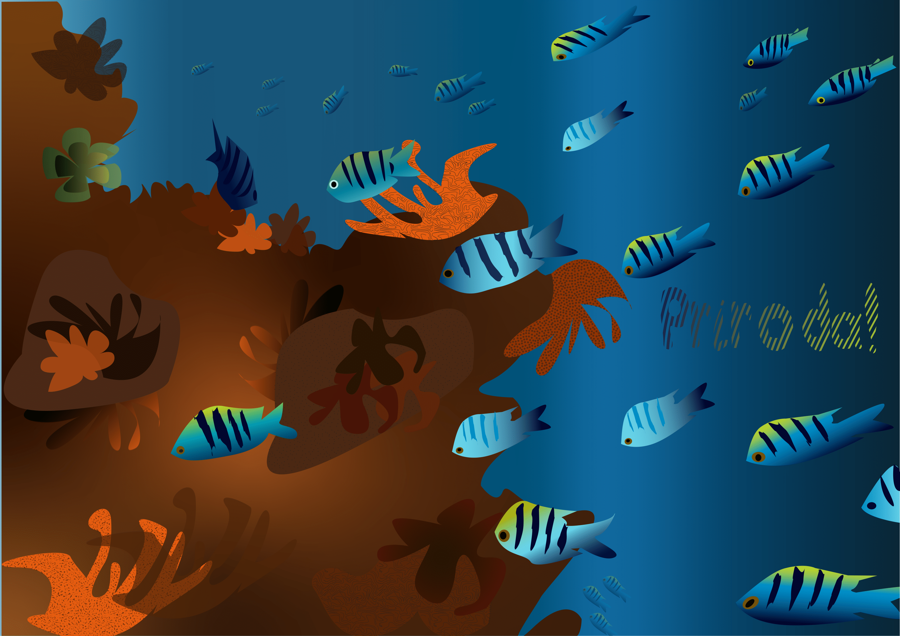
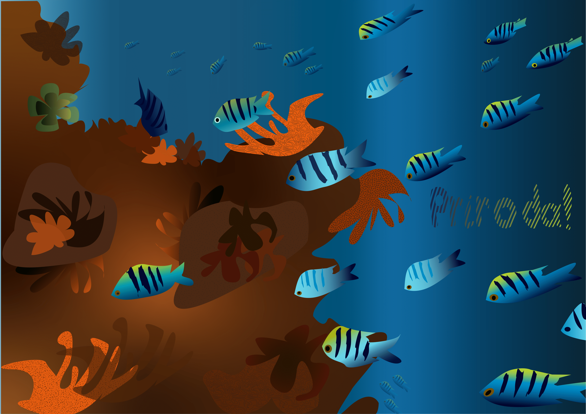
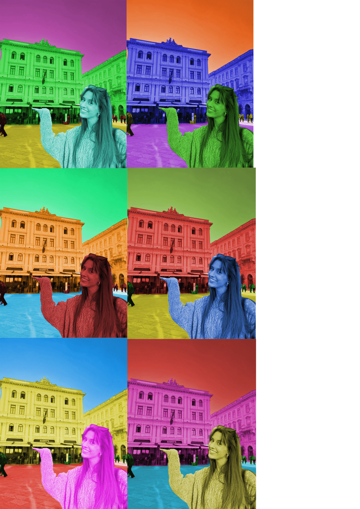

Vježba 1 – Illustrator
Izrada plakata pomoću slojeva i maski.

 

Vježba 2 – Photoshop
Izrada zadatka s vježbi i projektnog zadatka. Koristila sam različite tehnike kao što su izrezivanje i ljepljenje, maske, prilagođavanje boja i drugo.
